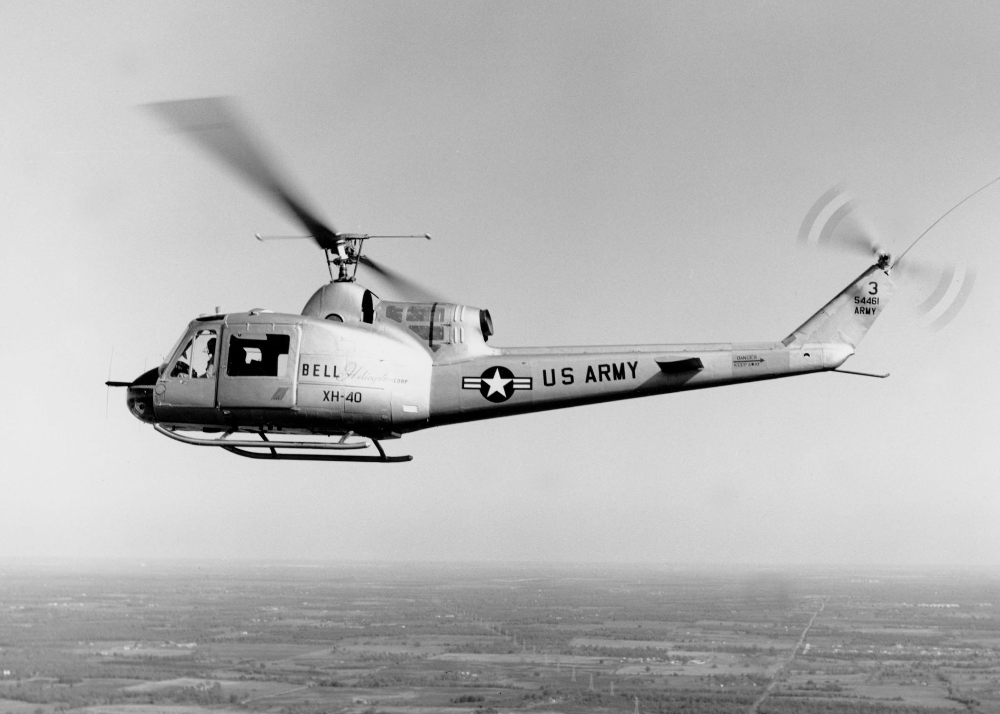

The Bell UH-1 helicopter started it's development in 1952. It was designed to replace the current helicopters that were too large or complex for general aviation missions. In 1955, the Company Bell won the bid for the contract and began to develop the helicopter they called Model 204 or XH-40. For five years the Model 204 was tested on and had many different variations. Through the years there were many variations created to suit specific needs. Some were made for transport and medevac whereas others were created to be aerial gunships. In 1960 the helicopter was adopted by the army as the HU-1A and got it's Huey nickname. In 1962 it was renamed to the UH-1 and adopted by the Marine Corps. Later it was adopted by the Air Force and became a staple of the American aviation fleet. Below is a picture of the XH-40 prototype:
